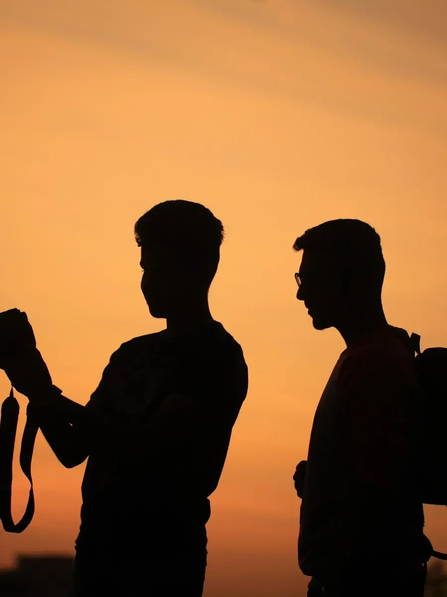
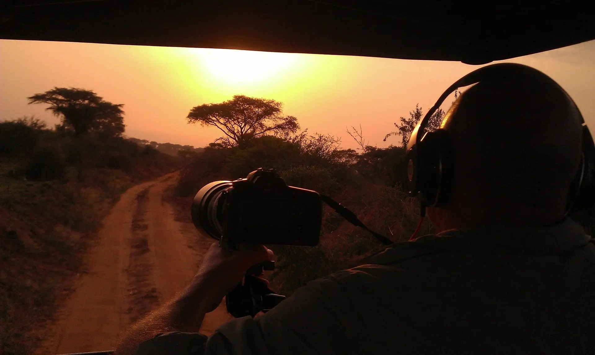
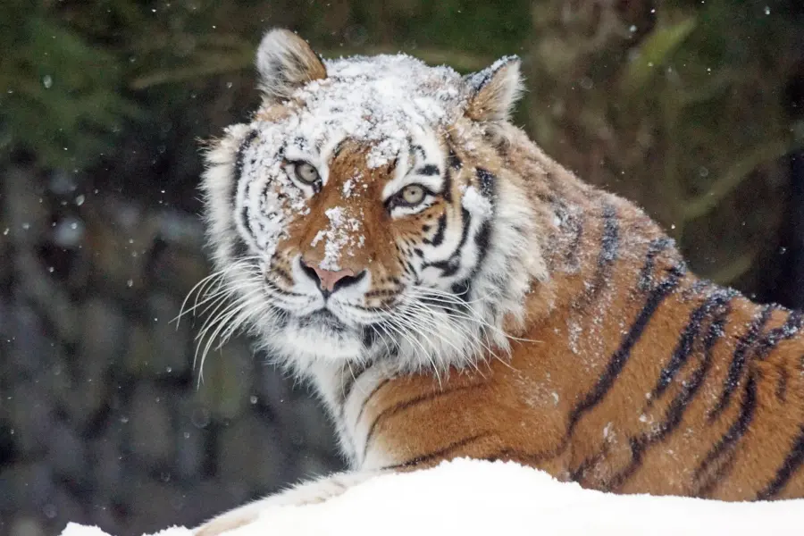
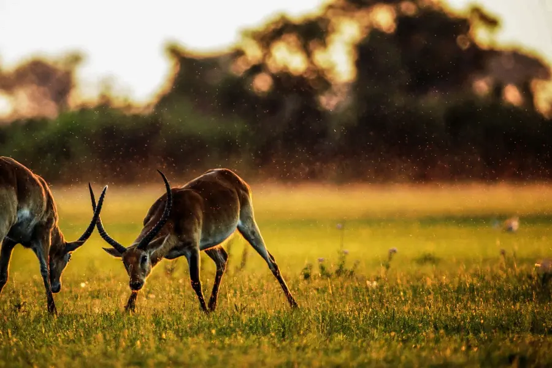
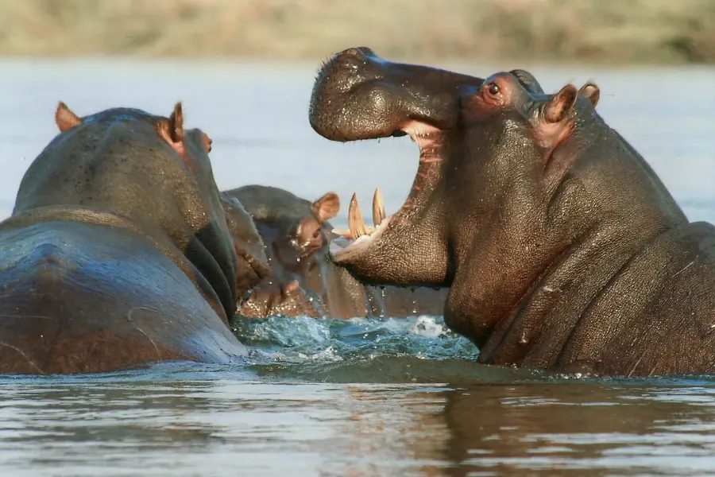
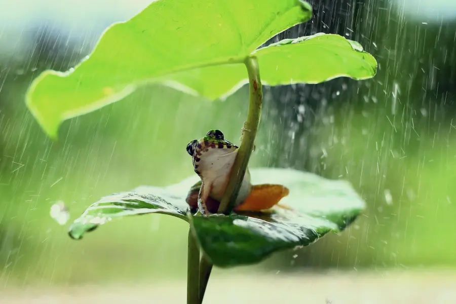
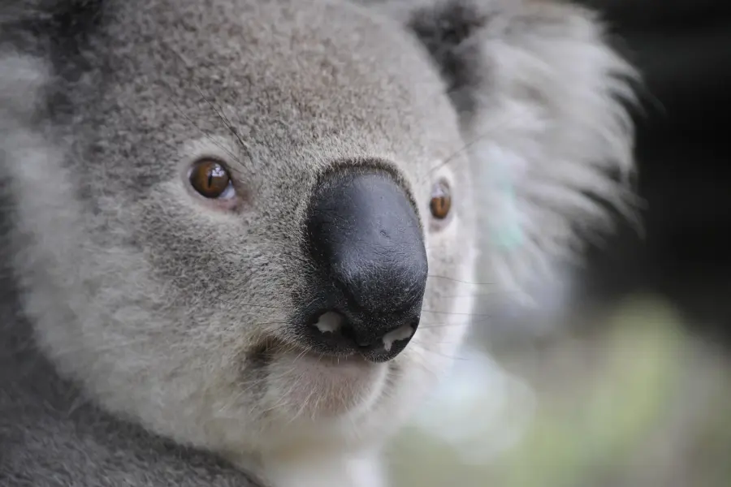
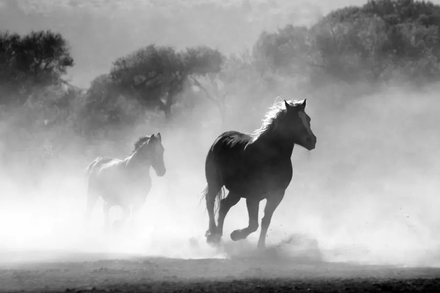
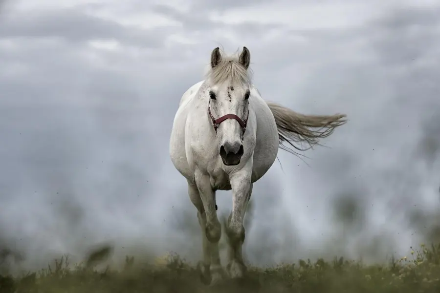

Bienvenidos a mi vida
Harry Photographer
La esencia salvaje del safari africano, en imágenes que se sienten.
Ver la galería
Sobre mí
Un toque de naturaleza hace que el mundo entero sea familiar
Fotografío fauna salvaje desde 2010. Cada amanecer, cada sonido y cada mirada de un animal es una historia, y mi trabajo es estar ahí, en silencio, cuando la luz, el movimiento y la emoción coinciden.
Acompaño expediciones y hago reportajes completos del viaje. Trabajo con paciencia y respeto: nunca intervengo en la escena.
- 2010
- empecé a fotografiar fauna
- 3
- formas de trabajar
- 25
- fotos en la galería

La fotografía de safari es un viaje de paciencia, intuición y respeto: momentos que solo pasan una vez.
Qué hago
Servicios

01Fotografía de fauna salvaje
Retratos de animales en libertad: su comportamiento, su mirada y su movimiento.

02Paisajes naturales
Atardeceres, sabana, montañas y horizontes que cuentan dónde estás.

03Reportajes de safari
El viaje completo contado en fotos, con mirada artística y naturalista.
Proyectos
Galería
Pulsa una foto para verla en grande.
Series
Proyectos

Mira profundamente en la naturaleza
Pequeños mundos que solo aparecen si te tomas tu tiempo para mirar.

Simplemente vivir no es suficiente
Instantes que recuerdan lo esencial: luz, formas y comportamiento natural.

Adopta el ritmo de la naturaleza
El ritmo del viento, del agua y de la luz, donde el tiempo va más despacio.

Déjate llevar por la naturaleza
Paisajes casi de sueño para dejarse sorprender.
Contacto
¿Hablamos de tu próximo viaje?
Para preguntas, colaboraciones o reservar una sesión. Te contesto lo antes posible.
Montequinto, Sevilla